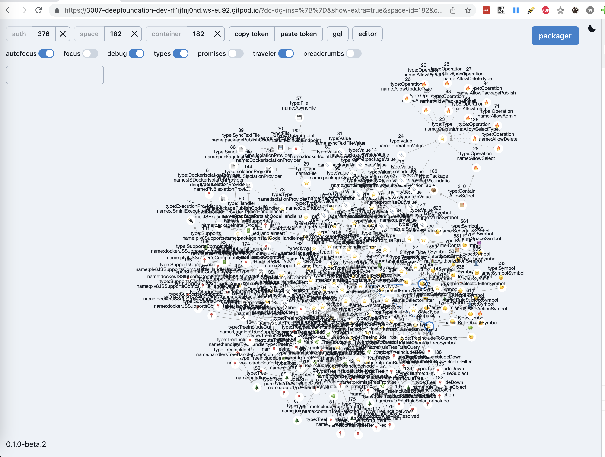
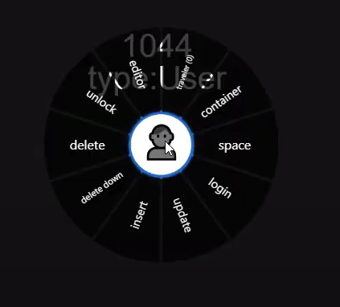

Classic looks, living data
Five families · one document · nested LiNo themes
DeepCase: switch the same subtree
Historical comparison
The original graph and radial menu are references; the chrome above uses
a graph placeholder.

DeepCase app #76 · classic light

DeepCase app #299 · dark radial menu
Handler windows
Independent nested axes
Seven corners × five lines